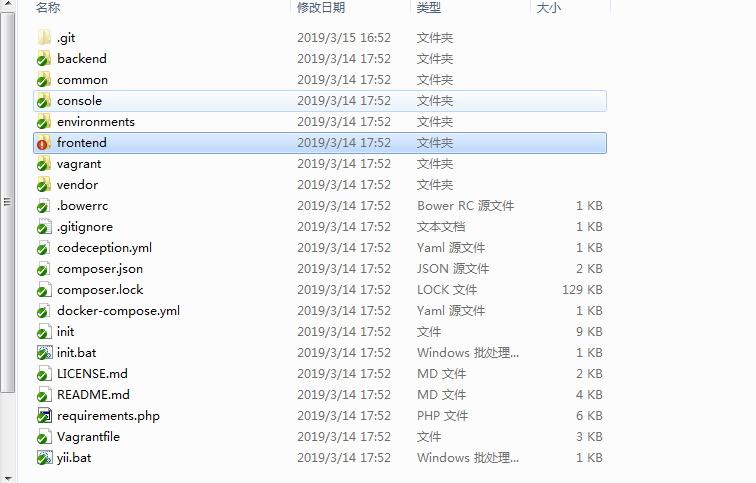
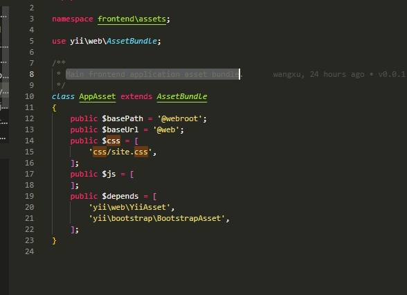

PS：因新项目后端使用yii2框架，不在使用纯html模板的方式搭建页面（前后端不分离模式）使用yii2的内置boostart封装模板，遂研究了一番yii2
通过yii2官方下载的基础文件结构

其中frontend 为放置前端文件的文件夹，
/frontend/views是放置前端页面（即单页面模块的文件夹）
/frontend/web是放置前端资源的文件夹
/frontend/web/assets 是放置前端js资源的文件夹
/frontend/web/css 是放置前端css资源的文件夹
layout为存放的公共布局（例如我这文件是/frontend/views/layouts/main.php）基本这块是放置公共头尾部分所有页面都会引入至main.php 再输出至对应的路由显示页面内容
1.在yii2中如何引入css文件至头部
1）.引入全局css：例如base.css
首先我们找到frontend/assets/AppAsset.php 该文件用于配置主前端应用程序资产包
在里面我们可以清晰看到如下代码

其中 :
piblic $basePath 指定包含资源包中资源文件并可Web访问的目录 例如：@webroot 指向的就是 文件名为web的根目录
public $baseUrl 指定对应到 basePath 目录的 URL @web 文件名为web的目录
public $css 列出此包中包含的 CSS 文件的数组。 请注意，只应使用正斜杠“/”作为目录分隔符。每个文件都可以单独指定为字符串， 也可以与属性标记及其值一起指定在数组中 是我们需要配置的公共css文件 由图上可以看出是数组格式 路径为css/xxx.css 在执行时文件会自动匹配到frontend/web/css文件下的指定css文件
public $depends 一个列出该资源包依赖的 其他资源包
2).引入单页面css
1.需要从页面指定到head标签呢
<?php $this->registerCssFile('site2.css');?> 在需要将css指定到head内的页面写入还函数 即可将文件引入head中，该文件指向的的文件路径默认为
2.按需在页面指定位置添加css
<?php
/* @var $this yii\web\View */
//必须文件
use yii\helpers\Html;
use frontend\assets\AppAsset;
?>
//需放在beginBody之外,将会在body之前出现 test.css文件
<?= Html::cssFile('@web/css/test.css') ?>
//可以指定参数，例如在conditon内指定ie5下才执行
<?= Html::cssFile('@web/css/test.css', ['condition' => 'IE 5']) ?>
<?php $this->beginBody() ?>
BODY内容
<?php $this->endBody() ?>
2.在yii2中如何引入js文件或者插入内联js
1).单页面内引入JS ，该例子不适用在公共布局有依赖源文件情况下使用（在那些会在哪生成）
1 <?php
2
3 /* @var $this yii\web\View */
4
5
6 use yii\helpers\Html;
7 use frontend\assets\AppAsset;
8
9 AppAsset::register($this);
10 $this->context->layout = false;
11
12 ?>
13 <?php $this->beginBody() ?>
14
15 BODY内容
16
17 <?php $this->endBody() ?>
18 必须在endBody之外引入否则将报html 类不存在
19 <?=Html::jsFile('@web/assets/util.lin.js')?>
20 <?=Html::jsFile('@web/assets/core-min.js')?>
2).单页面内引入JS ，该例子不适用在公共布局有依赖源文件情况下使用（在beginBody内引入js文件情况，引入后会加会全局js之后）
<?php
/* @var $this yii\web\View */
use yii\helpers\Html;
use frontend\assets\AppAsset;
AppAsset::register($this);
$this->context->layout = false;
?>
<?php $this->beginBody() ?>
<?php
use yii\helpers\Html;
?>
BODY内容
如须在endBody之内引入，必须在beginBody之内重新引入 Html类
<?=Html::jsFile('@web/assets/util.lin.js')?>
<?=Html::jsFile('@web/assets/core-min.js')?>
<?php $this->endBody() ?>
3).单页面内引入JS ，该例子适合有依赖源文件情况下使用（引入之后会加载在依赖源之后）
<?php
/* @var $this yii\web\View */
use yii\helpers\Html;
use frontend\assets\AppAsset;
AppAsset::register($this);
$this->context->layout = false;
?>
<?php $this->beginBody() ?>
BODY内容
<?php $this->endBody() ?>
//该方法是将registerJsFile方法注册（将文件按需加载到指定的位置去）
<?php
$this->registerJsFile('/assets/jquery-ui.min.js',['depends'=>['backend\assets\AppAsset']]);
$this->registerJsFile('/assets/jquery-ui-timepicker-addon.min.js',['depends'=>['backend\assets\AppAsset']]);
$this->registerJsFile('/assets/jquery-ui-timepicker-zh-CN.js',['depends'=>['backend\assets\AppAsset']]);
$this->registerJsFile('/assets/admin/good.js',['depends'=>['backend\assets\AppAsset']]);
?>
4).单页内联JS ，因为在文件中若直接使用有依赖全局的js所以在页面直接写入<script></script>将会出现，xx 未定义问题
使用该方法后 将会将定义的js代码加入到页面最后面
<?php
$js = <<<JS
$(".flow_conter li").hover(function () {
......
});
JS;
$this->registerJs($js);
?>
5).单页内联JS ，该方法可将js插入引入文件之后，但是会在yii2动态生成的内联代码之前（例如使用了验证，就可在源代码处看着该段代码插入在表单验证的源代码之前了）
<?php $this->beginBlock('alert')?>
$(".btn-getcode").click(function(){
$.post(
'<?= Url::to(["user/sms_secret"])?>',
{mob:$('[name="BankAddForm[mob]"]').val()},
function(data){
alert(data.msg);
},'json')
})
<?php $this->endBlock()?>
<?php $this->registerJs($this->blocks['alert'],yii\web\View::POS_END)?>